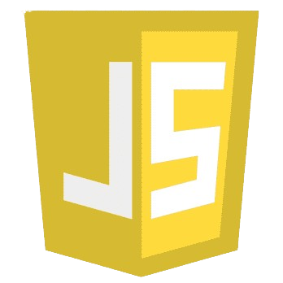

C Language

Python

HTML

JavaScript

Hello! I'm Bermilyn Codinera, a 2nd-year BSIT student at Eastern Visayas State University (EVSU). I'm passionate about learning and growing in the field of technology. As a beginner, I'm exploring programming, web development, and IT fundamentals.
C programming is a general-purpose, procedure-oriented programming language. It is both machine-independent
and structured. C is a high-level programming language developed by Dennis Ritchie in the early 1970s. It
is now one of the most popular and influential programming languages worldwide. C is popular for its simplicity,
efficiency, and versatility. It has powerful features including low-level memory access, a rich set of operators,
and a modular framework. Apart from its importance with respect to the evolution of computer programming technologies,
the design of C language has a profound influence on most of the other programming languages that are in use today.
The languages that are influenced by C include Java, PHP, JavaScript, C#, Python and many more. These languages have
designed their syntax, control structures and other basic features from C.
C supports different hardware and operating systems due to its portability. Generally, it is considered as a basic
language and influenced many other computer languages. It is most widely used in academia and industry. C's
relevance and extensive acceptance make it crucial for prospective programmers. The history of the C programming
language is quite fascinating and pivotal in the development of computer science and software engineering.
'ALGOL' was the foundation or progenitor of programming languages. It was first introduced in 1960. 'ALGOL' was
widely used in European countries. The ALGOL had introduced the concept of structured programming to the developer
community. The year 1967 marked the introduction of a novel computer programming language known as 'BCPL', an acronym
for Basic Combined Programming Language. BCPL was designed by Martin Richards in the mid-1960s. Dennis Ritchie created
C at Bell Laboratories in the early 1970s. It developed from an older language named B that Ken Thompson created. The
main purpose of C's creation was to construct the Unix operating system, which was crucial in the advancement of
contemporary computers. BCPL, B, and C all fit firmly in the traditional procedural family typified by Fortran and
Algol 60. BCPL, B and C differ syntactically in many details, but broadly they are similar.
In 1971, Dennis Ritchie started working on C, and he and other Bell Labs developers kept improving it. The language
is appropriate for both system programming and application development because it was made to be straightforward,
effective, and portable. Dennis Ritchie commenced development on C in 1971 and, in collaboration with other developers
at Bell Labs, proceeded to refine it. The language was developed with portability, simplicity, and efficiency in mind,
rendering it applicable to both application and system programming.
In the late 1980s, history was about to be written. It was that time when working on Python started. Soon after that,
Guido Van Rossum began doing its application-based work in December of 1989 at Centrum Wiskunde & Informatica (CWI)
which is situated in the Netherlands. It was started as a hobby project because he was looking for an interesting
project to keep him occupied during Christmas.The programming language in which Python is said to have succeeded is
ABC Programming Language, which had interfacing with the Amoeba Operating System and had the feature of exception
handling. He had already helped create ABC earlier in his career and had seen some issues with ABC but liked most
of the features. After that what he did was very clever. He had taken the syntax of ABC, and some of its good features.
It came with a lot of complaints too, so he fixed those issues completely and created a good scripting language that
had removed all the flaws.
The inspiration for the name came from the BBC's TV Show - 'Monty Python's Flying Circus' , as he was a big fan of
the TV show and also he wanted a short, unique and slightly mysterious name for his invention and hence he named it
Python! He was the “Benevolent dictator for life” (BDFL) until he stepped down from the position as the leader on
12th July 2018. For quite some time he used to work for Google, but currently, he is working at Dropbox.
The language was finally released in 1991. When it was released, it used a lot fewer codes to express the concepts, when
we compare it with Java , C++ & C . Its design philosophy was quite good too. Its main objective is to provide code readability
and advanced developer productivity. When it was released, it had more than enough capability to provide classes with inheritance,
several core data types of exception handling and functions.
HyperText Markup Language (HTML) was initially developed by Tim Berners-Lee in late 1991. It was designed as a standard
language for creating and formatting documents on the World Wide Web. All the web pages on the internet are made from HTML.
From 1990 to 1995, HTML underwent changes and extensions, initially at CERN and then at the IETF. The World Wide Web Consortium
(W3C) became the new home for HTML development.
We must first examine the idea of hypertext in order to comprehend the origins of HTML. Early 20th-century pioneers like Vannevar
Bush proposed the concept of tying information together through hypertext, envisioning a "memex" machine that could organize enormous
volumes of information using linked microfilm. However, Ted Nelson, an American philosopher and sociologist, first used the word
"hypertext" in the 1960s. Nelson's idea of hypertext was to develop a network of connected text and multimedia that permitted
non-linear information navigation.
Here you will see the evolution of HTML over the past couple of decades. The major upgrade was done in HTML5 in 2012.
1991 - Tim Berners-Lee created HyperText Markup Language but it was not officially released.
1993 - Tim Berners-Lee created the first version of HTML that was published and available to the public.
1995 - HTML 2.0 was released with a few additional features along with the existing features.
1997 - There was an attempt to extend HTML with HTML 3.0, but it was replaced by the more practical HTML 3.2.
1998 - The W3C (World Wide Web Consortium) decided to shift focus to an XML-based HTML equivalent called XHTML.
1999 - HTML 4.01, which became an official standard in December 1999, was the most widely used version in the early 2000s.
2000 - XHTML 1.0, completed in 2000, was a combination of HTML4 in XML.
2003 - The introduction of XForms reignited interest in evolving HTML itself rather than replacing it with new technologies.
This new theory recognized that XML was better suited for new technologies like RSS and Atom, while HTML remained the cornerstone
of the web.
2004 - A W3C workshop took place to explore reopening HTML's evolution. Mozilla and Opera jointly presented the principles that
later influenced HTML5.
2006 - The W3C expressed interest in HTML5 development and formed a working group to collaborate with the WHATWG. The W3C aimed
to publish a "finished" HTML5 version, whereas the WHATWG focused on a Living Standard, continuously evolving HTML.
2012 - HTML5 can be seen as an extended version of HTML 4.01, which was officially published in 2012.
JavaScript is developed by Brendan Eich, a computer scientist and programmer at Netscape Communications Corporation. The initial
name of the JavaScript was the 'Mocha'. After that, it changed to 'LiveScript', and then 'JavaScript'. Between 1996 and 1997,
the European Computer Manufacturers Association (ECMA) standardized JavaScript. After that, 3 revisions of the JavaScript have been done.
In ES5 (2009), Node.js was introduced to use JavaScript as a server-side language. The ES6 (2015) was a significant revision of JavaScript,
introducing advanced features into JavaScript. Currently, JavaScript has reached the version ES14. ES14 (ECMAScript 2023) the 14th version,
was released in June 2023.
JavaScript is a dynamic computer programming language. It is lightweight and most commonly used as a part of web pages, whose implementations
allow client-side script to interact with the user and make dynamic pages. It is an interpreted programming language with object-oriented capabilities.
JavaScript is a single-threaded programming language that we can use for client-side or server-side development. It is a dynamically typed
programming language, which means that we don’t care about variable data types while writing the JavaScript code. Also, it contains the control
statements, operators, and objects like Array, Math, Data, etc. JavaScript was first known as LiveScript, but Netscape changed its name to JavaScript,
possibly because of the excitement being generated by Java. JavaScript made its first appearance in Netscape 2.0 in 1995 with the name LiveScript.
The general-purpose core of the language has been embedded in Netscape and other web browsers.
Client-side JavaScript is the most common form of the language. The script should be included in or referenced by an HTML document for the code to
be interpreted by the browser. It means that a web page need not be a static HTML but can include programs that interact with the user, control the
browser, and dynamically create HTML content. The JavaScript client-side mechanism provides many advantages over traditional CGI server-side scripts.
For example, you might use JavaScript to check if the user has entered a valid e-mail address in a form field. The JavaScript code is executed when
the user submits the form, and only if all the entries are valid they would be submitted to the Web Server. JavaScript can be used to trap user-initiated
events such as button clicks, link navigation, and other actions that the user initiates explicitly or implicitly. The Popular client-side libraries
for JavaScript development are ReactJS, NextJS, Vue JS, Angular JS, etc.
In the early days, JavaScript was used for front-end development to add behaviors to HTML pages. Since 2009, JavaScript is also used as a server-side
programming language to build scalable and dynamic web applications. Node.js is one of the best and most popular JavaScript runtime environments for
building the server of applications using JavaScript. Using Node.js, we can execute the JavaScript code outside the browser and manage the server task.
The server tasks can be an interaction with the database, APIS, file handling, or maybe network communication. Due to the event-driven architecture of
Node.js, it is faster than other server-side programming languages.
PHP (Hypertext Preprocessor) is a server-side scripting language primarily used for web development. It was created by Rasmus Lerdorf in 1994 as a set
of Common Gateway Interface (CGI) scripts, and later rewritten as a scripting language by two developers, Andi Gutmans and Zeev Suraski. PHP was initially
used for personal websites but gained popularity due to its ability to work with databases and create dynamic web pages. It is open-source and free to use,
making it widely used by developers worldwide. PHP is also highly extensible, with a large number of extensions and libraries available, allowing developers
to add new features and functionalities easily. PHP has gone through many versions and updates, with PHP 8 being the latest release in November 2020. It
continues to be one of the most popular programming languages for web development today.
PHP, which stands for Hypertext Preprocessor, is a popular server-side scripting language used for web development. It was originally designed by Rasmus Lerdorf
in 1994 as a set of Common Gateway Interface (CGI) scripts, but it was later rewritten as a programming language by Andi Gutmans and Zeev Suraski. PHP code is
executed on the server, which means that it generates dynamic content and interacts with databases and other server-side technologies. One of the benefits of PHP
is that it is free, open-source, and cross-platform. This means that it can be used on different operating systems like Windows, Mac OS, and Linux. PHP is also
highly scalable, and it can handle high traffic websites and complex web applications. In addition, PHP has a large community of developers who contribute to
its growth by creating new libraries, extensions, and frameworks.
PHP, originally called Personal Home Page Tools. Lerdorf developed a series of Common Gateway Interface (CGI) scripts to track visitors to his personal website,
and he called these scripts "Personal Home Page Tools" or PHP Tools. He released this code as open source, and it quickly gained popularity among web developers.
Over the years, PHP has continued to evolve, with new versions introducing features such as object-oriented programming, improved error handling, and better
performance. PHP has also been influenced by the rise of web frameworks, with many popular frameworks built on top of the language, such as Laravel, Symfony,
and CodeIgniter.
With PHP 2, Andi Gutmans and Zeev Suraski rewrote the language as a standalone interpreter, making it a fully functional programming language. This enabled PHP
to be used for developing dynamic web pages that interact with databases, web servers, and other server-side technologies. PHP 2 introduced several key features,
including support for forms, improved database integration, and support for external variables. It also included a new syntax for writing PHP code that was more
intuitive and easier to read.
During this time, PHP(history of php) started to attract attention from companies and organizations that needed to build complex web applications quickly and
efficiently. It also gained a large community of developers who contributed to its growth by creating new libraries, extensions, and frameworks. One of the most
significant developments during the PHP 3 era was the creation of the PHP Group, a team of developers responsible for maintaining and improving the language.
PHP 4 was the fourth major version history of php of the PHP programming language, released in May 2000. It was a significant milestone in PHP's development,
introducing several new features and improvements over its predecessor, PHP 3. PHP 4 included improved support for object-oriented programming, better memory
management, and enhanced error handling capabilities. It also added support for several new protocols, such as IMAP, SNMP, and LDAP. PHP 4 was faster and more
stable than its previous versions, making it more attractive to developers.
History of 5 was a significant update to the language, released in 2004. It introduced several new features such as improved object-oriented programming
(OOP) support, new error handling mechanisms, and the ability to interface with the Simple Object Access Protocol (SOAP). It also included improved performance
and security features. PHP 5 was widely adopted by developers, and it served as the foundation for many popular content management systems (CMS) such as WordPress
and Drupal.
History of PHP 6 was an experimental version of the language that was in development for several years but never officially released. It was intended to introduce
significant changes such as native Unicode support, which would have made it easier to create multilingual web applications. However, due to various technical and
logistical issues, the project was eventually abandoned.
History of PHP 7 was released in 2015 and marked a significant milestone in the language's evolution. It introduced several performance improvements, making PHP 7
up to twice as fast as its predecessor. It also included new features such as return type declarations, anonymous classes, and the null coalescing operator. PHP 7's
improved performance and new features have made it a popular choice for modern web development, and it has been widely adopted by the developer community.
The latest version of PHP, PHP 8, was released in 2020 and includes several new features and improvements, including improved performance, new language features,
and improved error handling. This has helped to make PHP more powerful and efficient and has positioned it for continued growth in the future.